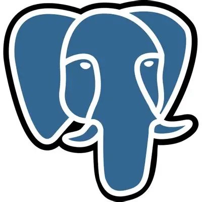

AgriRS LAB
Website para o AgriRS Lab, laboratório de Sensoriamento Remoto Agrícola do INPE. A proposta centraliza informações, pesquisas e iniciativas do laboratório para ampliar visibilidade e acesso.
Ver repositórioProjetos em equipe e faculdade
Website para o AgriRS Lab, laboratório de Sensoriamento Remoto Agrícola do INPE. A proposta centraliza informações, pesquisas e iniciativas do laboratório para ampliar visibilidade e acesso.
Ver repositórioChatbot para a secretaria da FATEC Jacareí, com fluxos de perguntas e respostas que ajudam estudantes a encontrar informações sobre cursos, horários, eventos e rotinas acadêmicas.
Ver repositórioEstudo, jogos e experimentos
Jogo de adivinhar inspirado em Loldle com temática de Sousou no Frieren, unindo lógica, feedback visual e uma proposta criada para fãs do anime. O objetivo do jogo é acertar o personagem diário de Sousou no Frieren.
Ver repositórioJogo de clique inspirado em Cookie Clicker e League of Legends, usando Essências Azuis como recurso central para progressão.
Ver repositórioStack atual
 CSS
CSS
 Python
Python
 TypeScript
TypeScript

PostgreSQL Docker
Docker
Contato